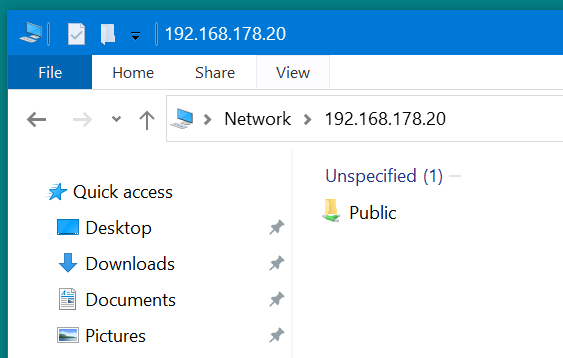
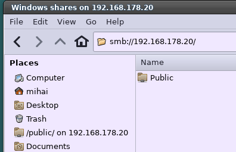
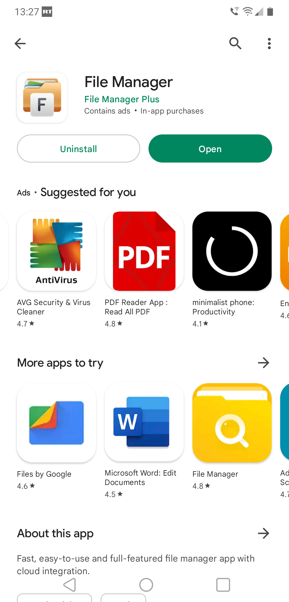

For more options read the full tutorial here
Install Sambadnf install samba samba-common samba-clientSetup the share location
mkdir -pv /mnt/sdb1/1TBsamba chmod -Rv 755 /mnt/sdb1/1TBsamba chown -Rv nobody:nobody /mnt/sdb1/1TBsamba chcon -u system_u -t samba_share_t -v /mnt/sdb1/1TBsambaBackup existing configuration
mv /etc/samba/smb.conf /etc/samba/smb.conf.bakEdit the file /etc/samba/smb.conf
[global] workgroup = WORKGROUP server string = Samba Server %v netbios name = rocky-9 security = user map to guest = bad user dns proxy = no ntlm auth = true [Public] path = /mnt/sdb1/1TBsamba browsable =yes writable = yes guest ok = yes read only = noCheck if smb.conf is correct with:
testparmActivate the services
systemctl start smb.service systemctl start nmb.service systemctl enable smb.service systemctl enable nmb.service systemctl status smb.service systemctl status nmb.serviceAllow samba ports in iptables
# Open Samba ports for everybody from LAN iptables -A INPUT -s 192.168.0.0/16 -p udp -m udp --dport 137 -j ACCEPT iptables -A INPUT -s 192.168.0.0/16 -p udp -m udp --dport 138 -j ACCEPT iptables -A INPUT -s 192.168.0.0/16 -p tcp -m tcp --dport 139 -j ACCEPT iptables -A INPUT -s 192.168.0.0/16 -p tcp -m tcp --dport 445 -j ACCEPT i6ptables -A INPUT -s fe80::/10 -p udp -m udp --dport 137 -j ACCEPT ip6tables -A INPUT -s fe80::/10 -p udp -m udp --dport 138 -j ACCEPT ip6tables -A INPUT -s fe80::/10 -p tcp -m tcp --dport 139 -j ACCEPT ip6tables -A INPUT -s fe80::/10 -p tcp -m tcp --dport 445 -j ACCEPT
Access the share on Windows with: \\192.168.178.20

Access the share on Linux with: smb://192.168.178.20

Access the share on Android with:

To share a Private folder and protect it with a password, read the second part of the
tutorial